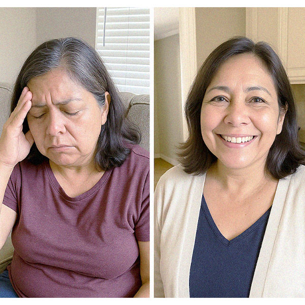
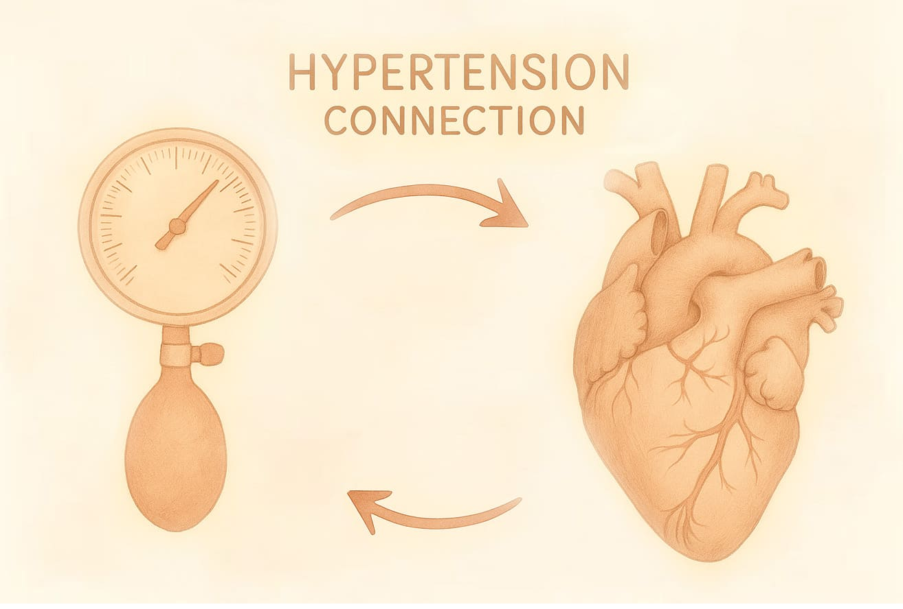
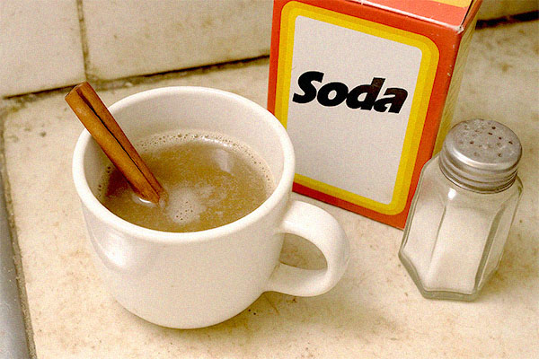

Más de 85,000 mexicanos se liberaron de la hipertensión — sin pastillas, dietas ni médicos.
Autora: Cristina Mendoza
Un sencillo ritual de 15 segundos activa la recuperación del cuerpo desde dentro: la presión se estabiliza a 120/80,
desaparecen los dolores de cabeza y el zumbido en los oídos, y la energía vuelve — sin farmacias, sin esfuerzos y sin
efectos secundarios.

Tenía 62 años… y la presión la atormentaba todos los días.
"Alejandra" había probado de todo: pastillas, dietas, hierbas, caminatas. Pero su presión seguía subiendo y bajando. Los dolores de
cabeza, el zumbido en los oídos y la debilidad constante se convirtieron en algo normal.
Pensaba que la causa era la edad. Pero su médico, el Dr. Bruno Román, le explicó que no se trataba de la edad ni de los
vasos sanguíneos.
La verdadera causa era la sobrecarga de los riñones y el exceso de cortisol, la hormona del estrés.
Ese es el factor que interfiere con el funcionamiento del cuerpo y provoca hipertensión, incluso si has llevado un estilo de vida saludable toda la vida.
Según estudios del Instituto de Salud de México, es posible recuperar la presión normal mediante un sencillo método a
base de sal y canela.

Base científica de la recuperación del sistema cardiovascular
El cuerpo tiene la capacidad de restablecer por sí solo una presión arterial normal.
Pero cuando los riñones dejan de funcionar correctamente y aumenta el nivel de cortisol — la hormona del estrés — se
activa una peligrosa reacción en cadena:
- – La presión arterial se eleva
- – Comienzan los dolores de cabeza y el zumbido en los oídos
- – El corazón y los vasos sanguíneos se deterioran
- – Se acumula el cansancio y se pierde la energía
El Dr. Bruno Román y un equipo de científicos mexicanos identificaron una conexión clave entre los riñones, el cortisol
y la hipertensión.
¿La solución?
Un remedio natural a base de hierbas que corrige la deficiencia de D2 y activa los mecanismos internos de
recuperación
visual.
¿La solución?
Una fórmula natural a base de sal marina y extracto de canela que limpia los riñones y normaliza el nivel de cortisol.
Clínicamente comprobado:
- – La presión se estabiliza a 120/80
- – Desaparecen los dolores de cabeza
- – Se elimina el zumbido en los oídos
- – Vuelve la energía y la ligereza

"Como si hubieran reprogramado mi cuerpo"
Más de 85,000 mexicanos ya están utilizando este sencillo ritual para recuperar su presión normal y volver a sentirse
tranquilos.
«Me preguntan qué pastillas estoy tomando. Pero no tomo ninguna — simplemente empecé a aplicar un método que activa la
recuperación natural del cuerpo.»
«La presión dejó de subir y bajar. Desaparecieron los dolores de cabeza y el zumbido en los oídos. Me despierto sin
pesadez ni cansancio.»
«Por primera vez en muchos años siento que tengo el control de mi salud. Sin medicamentos, sin dietas — solo mi cuerpo
funcionando como debe.»
Este método actúa a un nivel profundo, ayudando al organismo a regenerarse desde dentro — de forma natural y segura.
Cómo probarlo por tu cuenta
No necesitas pastillas, dietas estrictas ni tratamientos costosos.
Este ritual de 15 segundos activa mecanismos ocultos de recuperación y estabiliza la presión — desde dentro, sin efectos
secundarios.
El Dr. Bruno Román lo explica todo en un breve video.
Haz clic abajo para verlo — antes de que lo eliminen.

Elena Martínez
Isaac Santos
María Vázquez
Carlos Méndez
Lucía López
Antonio Pérez
Sofía Gutiérrez
Ramona Cárdenas
Alejandro Rodríguez
Guadalupe Flores
Rafael Gutiérrez
Leticia Morales
Felipe García
Isabel Ramírez
Miguel Delgado
Rosa Mendoza
Fernanda Jiménez
Sergio Ramos